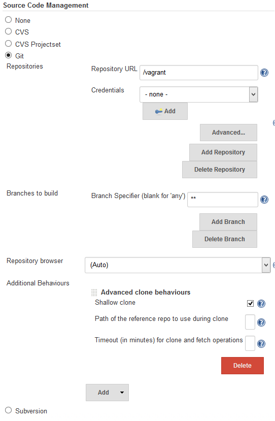
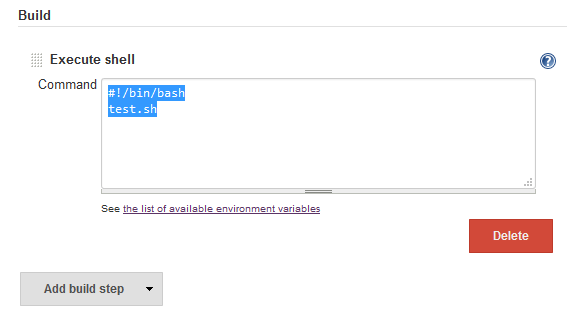

So I set up a local Jenkins CI server today that checks a local Git repository containing a Django project for any changes, runs tests, and reports coverage.
Tests? Wut?
There are many reasons to run test, and there are also many excuses not to run. For me it is because I forget, and am too eager to push code.
So how did I solve this? By setting up a local Jenkins CI server.
What is Jenkins? (to me)
To me Jenkins is a way to build my project and run tests easily, because it doesn't require any interaction from me (beyond setting it up). This leaves me with no excuse not to run my tests. My goal was to set up Jenkins such that everytime a commit is made to my working Git repository, my tests will run. If you're wondering what CI is... here
Installing Jenkins
I had a lot of help setting this up, refer to the bottom for a list. Here I'm just going to list the steps I went through and point out the challenges.
First, I develop in a Vagrant box running Ubuntu. Jenkins has a Ubuntu package that makes installation simple, and they actually have instructions there. Basically it involves adding a new apt source and then installing Jenkins from there.
wget -q -O - https://jenkins-ci.org/debian/jenkins-ci.org.key | sudo apt-key add -
sudo sh -c 'echo deb http://pkg.jenkins-ci.org/debian binary/ > /etc/apt/sources.list.d/jenkins.list'
sudo apt-get update
sudo apt-get install jenkins
After this you can navigate to localhost:8080 on your browser to see Jenkin's web interface.
Note: Since I develop in a Vagrant box, to access the Jenkins web interface I had to forward the ports. Jenkins listens on localhost:8080, so in my Vagrant file forwards 8080 (guest) to 8081 (host), and I can access Jenkins from my host at localhost:8081
Installing Plugins
My project resides in a Git repository, and Jenkins doesn't offer Git support out of the box. There's a plugin to help though. Detailed plugin instructions are here
Go to Jenkins interface > manage jenkins > manage plugins, and install Git Plugin. After installing, you can configure your job. Here are the settings I use:
- Repository URL is a path passed to git clone, and my project is mounted onto /vagrant
- Shallow clone, I don't need the full history of the repository, so this should make things speedier

The setup for the Git means that your local git repo will be cloned down to Jenkin's workspace before each build. A workspace is the directory Jenkins is processing the build in, and for me it is /var/lib/jenkins/jobs/project/workspace where project is the name of the Jenkin's job. More information on the folder structure used by Jenkins can be found here
The first build!
Next up we need to actually run the tests. This can be configured in the Build section further down the page. Before Jenkins, how I was running my tests was just a shellscript, which is a simple wrapper around manage.py test to pass in the right parameters. So for Jenkins, all I needed to do was to call the shell script.

Click Build Now, and then navigate to the console output to enjoy your success! I hope. That's your first Jenkin's build :)
Report coverage with Cobertura
I use coverage.py to generate reports for my tests, and it also has the ability to generate XML file that Cobertura can regonize.

So again install Cobertura, and set it up by pointing it to the name of your coverage file. After this, click Build Now and you should be able to view the report from your build's status page.
Automate!
The final step is to set it up such that any changes you make (commit) will cause a build. We can do this is to set up a Build Trigger to Poll SCM (Git), on a 5 min schedule. So every 5 minutes, if Jenkins detects a change to the Git repository, it will run a new build.

setup a local jenkins